Why Classic Cartoon Hub?
Remember the cartoons you grew up with. The ones you wish were still on today, and not at 2AM because you have to do the adult thing and work and can't stay up and watch. Ever had the desire to share those cartoons and memories with the kids in your life, but you can't find the ones you want. This is the place for you.
How did this get started?
Excellent question. I too am a lover of classic cartoons, and wanted to share them with the kids in my life(my own daughter, and several neices and nephews). After searching online, and only finding videos scattered around YouTube,the idea hit me(ala Road Runner Style) to set up a central location where all of the classic toons could be found, regardless of the creator or production studio.
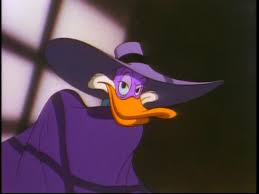
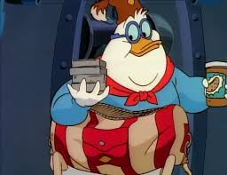
 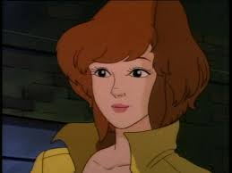
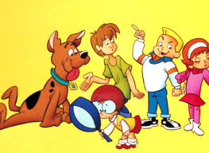
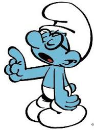
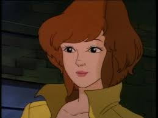
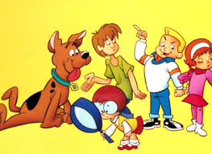
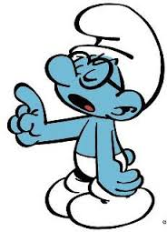
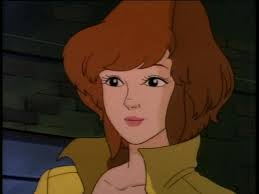
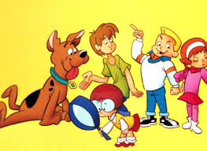
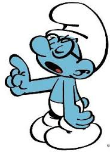What's here?
Another great question. At Classic Cartoon Hub, each cartoon we feature has it's own page. On individual pages, you will find cool and interersting facts/information/backstory/history (whatever you want to call it) about your favorite toons. You will also find to the YouTube channels for each toon, along with videos you can watch here.
Why the forum?
Because everyone has theroies about their favorite charactors. Here you can share, debate, and chat all you want.
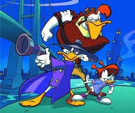
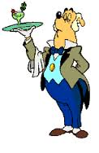
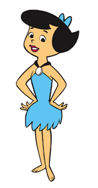
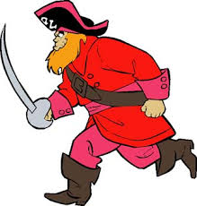
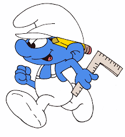